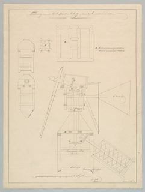

Teekening van een Vijzel-Staart-Molentje gebouwd by Monnickendam, 1826

Monnickendam, 1826 · drag to orbit, scroll to zoom
The sails speed up gradually to the speed the wind allows. Above about 11 m/s the miller would reef the sails, so the speed levels off. Wind comes from the left, onto the face of the sails.